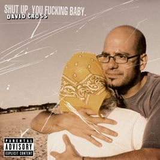

|
 David Cross: King of the Shitheads
The co-creator of HBO's Mr. Show has just released his first album of solo material, Shut Up You Fucking Baby!. More overtly political and gleefully vitriolic than anything he's done before, the album finds Cross dutifully tearing new assholes for Bush, Ashcroft, pedophilic priests and the kind of New Yorker who leaves used condoms in the middle of the street.
- - - - - - - - - -
by Gavin McInnes
 T NEVER SEEMS TO AMAZE ME (as Bobby Brown once said), how unfathomably unfunny most comedy is these days. One quick glance at the Sunday comics or ten minutes of prime time sitcoms and you start to realize we are living in a world composed primarily of Christian secretaries who have never seen a dick or heard the word "nigger"; a society where simply screaming, "Arrrgh! Mondays!!!" is considered hilarious. That's petrifying, no? That's the kind of scary that made The Stepford Wives and Invasion of the Body Snatchers huge hits. What ever happened to a thing called "the laugh"?
What about when we would literally shit our pants to records by Bill Hicks or Redd Foxx or Lenny Bruce or Richard Pryor? What about the laughs from those high school parties you went to when you were 14. Remember? There'd be about seven people in the backyard and after you and your friends smoked enough pot to kill a dog, that one, kind-of-crazy-but-still-smart-guy in the gang is more "on" than he's ever been and he's slaying everyone and they're literally shitting their pants and you're all bent over, FUCKING DYING, and you have a moment of clarity and you think to yourself "why can't this be on TV? Why can't everyone in the world be seeing this. They would fucking DIE."
That's when a bald, redneck Jewboy from Atlanta shows up and says "they didn't literally shit their pants, you asshole," and you realize all is not lost. A good comic is a reminder that we all feel the same way about the Sunday funnies and sitcoms. That's why I think people piss their pants so hard at David Cross shows. 50% of it is because the jokes are spot-on and are genuinely, mathematically funny and the other 50% is sheer elation that we were wrong about laughs being banished from earth. He is that guy from the backyard only tonight it's not 7 people it's 700. And they're all shitting their pants.
To see such an outcast (you try growing up a wiseass Yankee Jew in the deep south with nothing but sisters to get your back) talk so much negative shit about people with so much venom, and to have it come out as a heart-warming example that we're not alone and we all feel ostracized by virgin secretaries, is something only a huge fucking faggot like David Cross could pull off. (Just kidding.) (About the fag part, I mean.)
 "My Wife's Crazy" "My Wife's Crazy"
An excerpt from "Shut Up You Fucking Baby" |
| Download MP3 |
| 4.4 MB |
Duration: 9:40 |
 |
Click to buy CD |

|